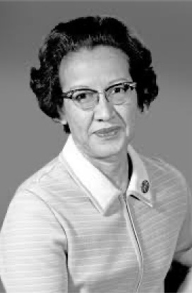
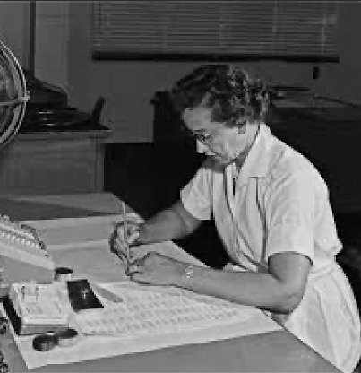

Katherine Johnson was born in White Sulphur Springs, West Virginia. She went to school at Greenbrier County-until 8th grade- where she "showed strong mathematical ability." Then, she went to high school at the West Virginia State College campus at 10 years old. After graduating high school, she stayed at that campus to pursue her college education, where she graduated with a degree in mathematics and French. She was a teacher for her first job out of college, where she worked for 2 years. After a period of family life, she got a job at NACA/NASA where she worked from 1953-1986. She died at the age of 101.
Katherine Johnson was an African American woman and was born on August 26, 1918. She grew up before the civil right movement started, which means that all of her childhood she had to endure segregation, discrimination, and hate. From the start of her education, she was at a disadvantage, because her county only offered public schooling to African American students up to 8th grade. Thanks to her parents she was able to attend High school and eventually college. In 1953 she started working at NACA/ NASA. While working there she faced workplace segregation and discrimination. Specifically, she and the other African American women had to "work, eat, and use restrooms separate from their white coworkers."
The office where she worked was called the "Colored Computers." This segregation was actually a Virginia state law. Being a woman in a field dominated by men it was hard for her to receive credit for her contributions. She stated that "..as women in those days" they had to be "assertive and aggressive" in order to be acknowledge. Despite all of these challenges Katherine was able to achieve great things.
Katherine Johnson made a number of contributions to the fields of math, science, and orbital mechanics. She helped calculate launch windows, trajectories, and other calculations at NASA specifically for the Mercury and Apollo missions. She performed a lot the calculations for Alan Shepard's 1961 mission, and John Glenn's 1962 orbit, as well as the 1969 Apollo 11 moon landing. She also helped co-author a number of research papers on calculations required to send spacecraft to orbit or to the moon. She helped write the first textbook on space, and established the foundational equation for pitting spacecrafts in orbit.
Katherine Johnson also contributed to the initial calculations for the early space shuttle programs, and even contributed to early planning for potential mission to Mars. Katherine Johnson laid a lot of the groundwork for modern spaceflight.
Katherine Johnson didn't just contribute to Spaceflight and other aerospace areas she laid the groundwork in mathematics for these things. The math that she used and did is still being used today in Spaceflight and satellite navigation, and it will continue to be used in the future. Her work has paved the way for future flights to the moon, mars, and deep space. Without her work the things like the Apollo 11 mission wouldn't have been possible. Today and into the future the same bases of trajectory analysis and orbital mechanics are being used like with the Artemis missions. Johnson's work is also essential for sending deep space probes and satellites into space. Now in today's world we have high tech satellites that use extremely advanced guidance systems that don't need as much human interaction. These high-tech satellites though couldn't have been made without Johnson's methods. Johnson's work basically didn't contribute to certain things for the future but instead set everything up for the future of Spaceflight.
We as a group, decided on Katherine Johnson because we felt that her accomplishments and what she accomplished during the time period she worked, was the most impressive out of all of our contributors. Some of our other contributors included Dr. Joy Buolamwini, Anita Borg, and Chris Young. Dr Joy currently works against discrimination in AI and face recognition software, while Anita Borg was an advocator for women’s representation in technology, and Chris Young is the CEO of McAfee which is a protection-based software company. In our opinion though, Katherine Johnson’s accomplishments in computer science with NASA while also being a black woman in the 1960’s was the most stunning out of everyone, which is why we chose her as our contributor.
For our project we chose some media assets to show the work and impact of what Katherine Johnson did. One media asset is a picture of Katherine Johnson for NASA so people can see the person behind the important work. Also, another asset we added a picture of the “human computers” at NASA’s research center, which is where she worked solving equations. Another asset is a trajectory chart from the friendship 7 mission, that she helped create the flight path. We also have a diagram of the first moon landing the Apollo 11 mission to show how math helped them reach the moon. Another asset is a screenshot from the movie Hidden Figures that is and asset because it is a movie about her and other woman in that industry’s life. The last one is her receiving the presidential medal of freedom to show how much her work actually mattered and made space missions possible.